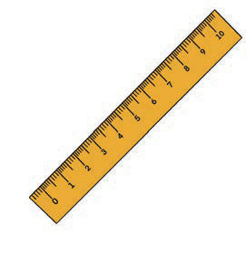
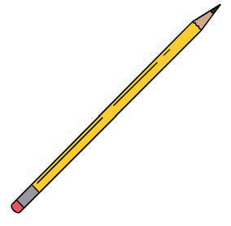
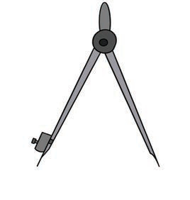
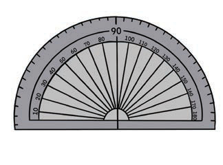
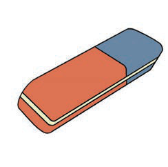
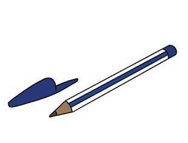

Ruler

Pencil

A pair of dividers

Protractor

Eraser

Pen
Figure 4: Some of the map drawing tools
Other tools that can be used in map drawing include a laptop, smartphone, tablet, digital drawing board, and digital drawing pen. Additionally, the cartographer may need drawing software such as Computer Aided Design (CAD) and Geographical Information System (GIS).
Drawing a simple map
A simple map is drawn without using a scale to present the location of features on the earth’s surface.
Steps for drawing simple map
(a)
To draw a simple map, first identify the size, shape, and direction of the area to be presented on the map;
(b)
identify the shapes, sizes, and locations of important features in the area you want to represent on the map;
(c)
prepare the area where you will draw the map by sketching a square or rectangle on the paper. Ensure that you leave space for the map title, key, and other explanations;